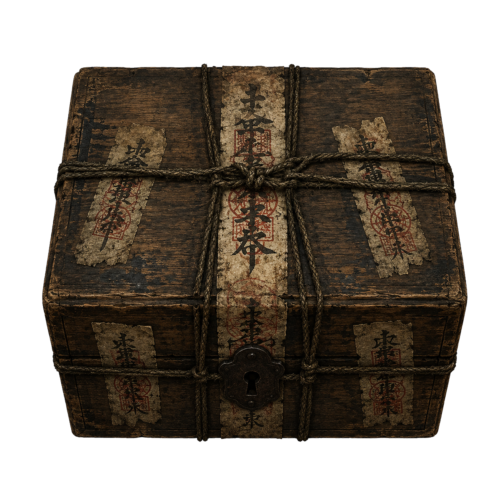
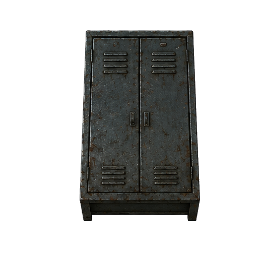
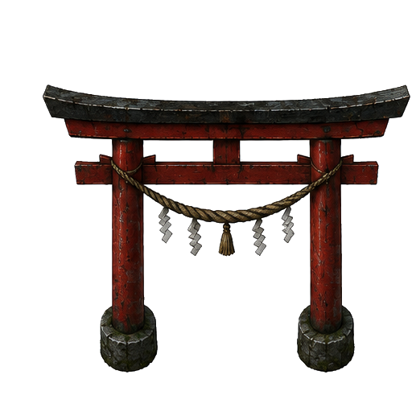

警告
このゲームには暗い画面、突然の音、追跡・捕獲演出、点滅に近い表現が含まれます。
体調が悪い場合、強い光や音が苦手な場合は、プレイを中止してください。
タップして進む
逃げろ。集めろ。納めろ。
左スティックで移動 走るボタンで走行切替 画面上の対象をタップして調べる どうぐボタンで使用
クリアした怪異の個体名とビジュアルを確認できる。
５つの神具を集めて中央の神社に奉納せよ。さすればあなたは恐怖から解き放たれるだろう…

神具箱 神具が入っている箱。開けると怪異に居場所がばれる。
どうぐ箱 探索を助けるどうぐが手に入ることがある。
神社・社 鳥居から入る。社は怪異を遠くへ飛ばす力を持つ。移動：画面左下のスティック
走る：画面右下の走るボタンでON / OFF。たいりょくが0になると、満タンまで走れない。
調べる・奉納・社の力：近くまで移動して対象をタップ
どうぐ選択：画面上部のどうぐ欄をタップ
どうぐ使用：画面右下のどうぐボタン
選択中のどうぐを捨てる：どうぐ欄を素早く2回タップ
小石・爆竹：どうぐボタンを押しながらスティックで方向を決め、指を離して投げる
小さな仏像：どうぐボタン長押しで神社へ転移
反撃モードの銃系道具：どうぐボタンを1回タップで構え、構え中にもう1回タップで発射。構え中にどうぐボタンをスワイプすると構え解除。
ポーズ：画面左上のポーズボタン
５つの神具を集めて中央の神社に奉納せよ。さすればあなたは恐怖から解き放たれるだろう…
神具の所持・奉納が重複なく計４つ以上になると、怪異は「最終形態」になる。
怪異に近づかれるほど画面が赤くなり、強く振動する。
神具箱を開ける、祭鈴を使うなどの行動で、怪異に居場所がばれる。
クリア記録を条件ごとに確認できる。記録を押すと詳細が表示される。
記録を選択してください。
「ゲームに戻る」で再開
生存時間：0.0秒
奉納：0/5
評価：---